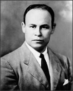

Charles R. Drew
1904–1950
Charles Drew was born in Washington, D.C. into a family with little money. He was an exceptionally bright student, but he was an even better athlete, and at first he seemed destined for a career in sports. But when he was 15 his sister Elsie died of tuberculosis, and Drew decided to become a doctor.
That was easier said than done. Not only did Drew lack money, but he was African American, and in the 1920s most universities only accepted white students. Drew was admitted to Amherst College in Massachusetts on an athletic scholarship. Not only was he captain of the track team and the football team's most valuable player, but he also excelled in science and math. After he graduated, he taught biology at a small college and coached athletes to earn money for medical school. In 1929 he entered the medical program at Canada's McGill University—then one of the best in the world—and eventually graduated second in his class.
Drew stayed in Canada to study to become a surgeon. When he came back to the United States, most hospitals refused to hire him due to his race. He got a teaching job in the College of Medicine at Howard University in Washington, D.C. A few years later, he earned a fellowship to attend Columbia University in New York.
In the course of his postgraduate studies at Columbia, Drew made a breakthrough discovery. He found that when he removed red blood cells from whole blood, the remaining fluid—plasma—could be stored without refrigeration for months. Moreover, he could give the plasma to any patient, regardless of blood type, without any compatibility complications. In 1940, he published his findings in his doctoral thesis, "Banked Blood: A Study in Blood Preservation," and soon became well known for his work.
As World War II escalated in Europe, Drew was appointed medical director of the ambitious "Blood for Britain" campaign, which collected 14,500 pints of plasma and shipped them to England to save the lives of soldiers and civilians injured by Nazi bombing campaigns. In 1941 Drew set up the American Red Cross Blood Bank, charged with collecting blood for use by the U.S. Army and Navy. When the military ruled that the Red Cross should not accept blood donations from African Americans, Drew fought to get the authorities to reverse their decision. Eventually they conceded that the blood of African Americans could be accepted, but they ruled that it would have to be stored separately.
Drew then resigned from the Red Cross and went back to teaching. He remained at Howard University until his death in a car accident in 1950.